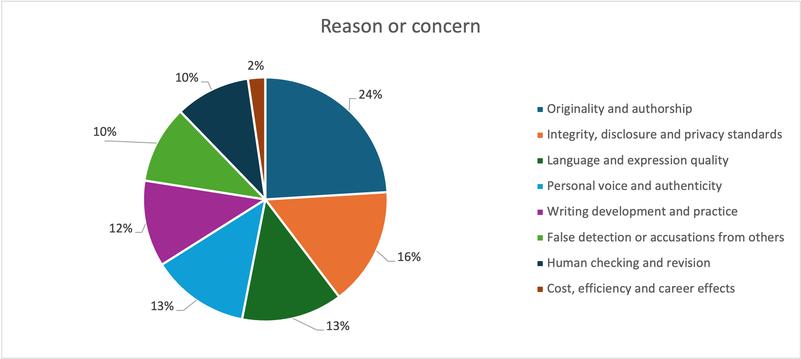
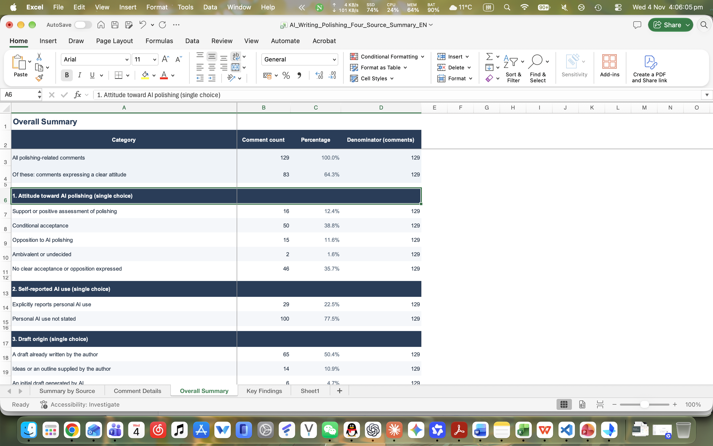
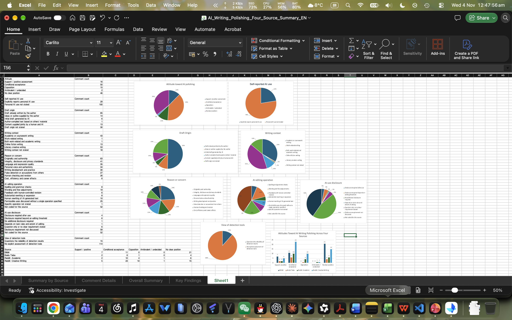
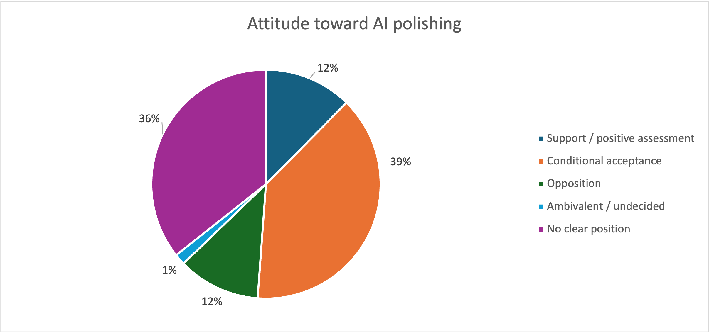
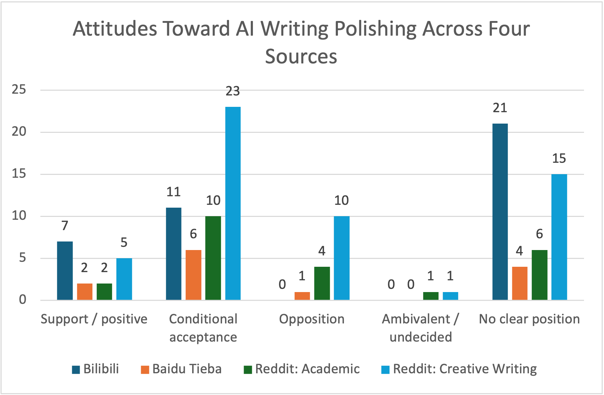

Week 5: Data Visualisation
This week, I continued working with the social media content I collected last week about using AI to polish writing, and used Excel to create visualisations. While organising the material, I realised that collecting many comments does not necessarily provide a lot of useful information. Last week's results included promotional posts and off-topic replies, so I still needed to filter the material before making charts. Some comments could also belong to several categories, making the total category count larger than the number of comments. I needed to distinguish between these two totals to interpret the proportions correctly.


This activity also showed me that how I collect and organise data depends on the question I want to answer. To understand what an individual comment means, I need to keep its context in mind. To compare attitudes across sources, I need to organise the content into categories and counts that can be compared. Turning comments into numbers makes them easier to summarise, but leaves out some details, so the numbers still need explanation.
My first difficulty when making the charts was that the original table was not easy to use directly. I reorganised the categories and their counts before I could produce the charts properly. Looking at the table alone gave me only a rough impression of the proportions, while the pie charts made the differences easier to see. However, for categories allowing multiple selections, the pie chart shows each category's share of all coded mentions, rather than its share of comments. This taught me to check what I was counting before choosing a chart.






Finally, I wanted to compare attitude counts across platforms. Using pie charts for everything felt confusing because I had to look back and forth between separate charts. I therefore chose a bar chart to show the different sources together. This helped me understand that the chart type should suit what I want to show, and that one type does not work equally well for every dataset. The source samples also differ in size, so a taller bar does not necessarily mean that people on that platform are more supportive of AI polishing.


While organising the material, I also found a lot of information relating to personal privacy. For the public presentation, I removed identifying information and mainly used aggregate charts, because showing complete comments was unnecessary for explaining the results. I also cannot treat these comments as everyone's attitudes, since people's situations and the contexts of their comments differ. This activity made me realise that, although visualisation makes results easier to see, I still need to explain where the data comes from and what it covers, so that the charts do not suggest more than the material can support.